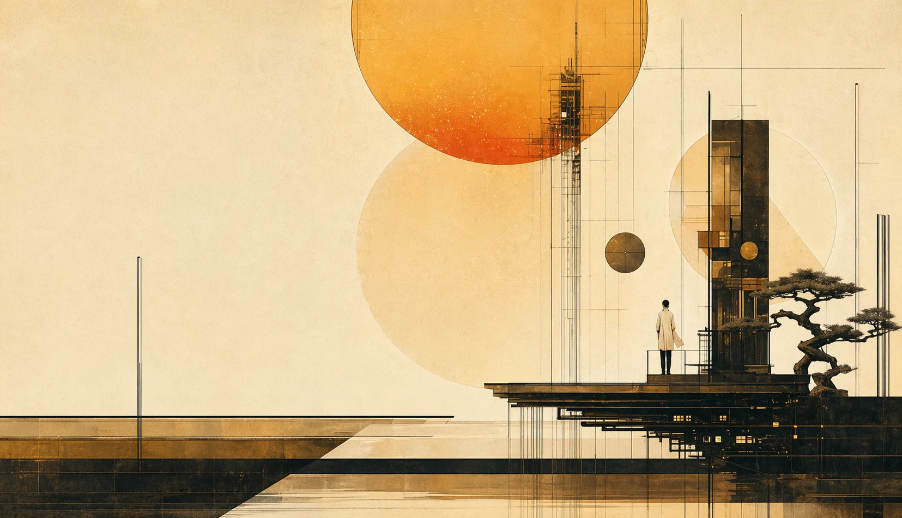
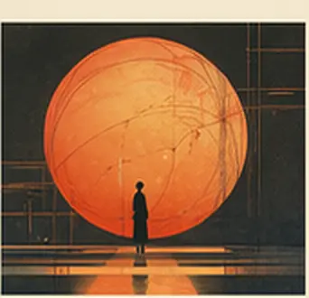
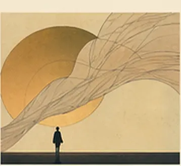
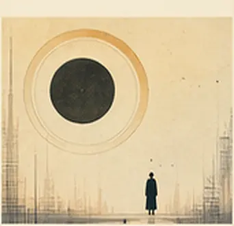
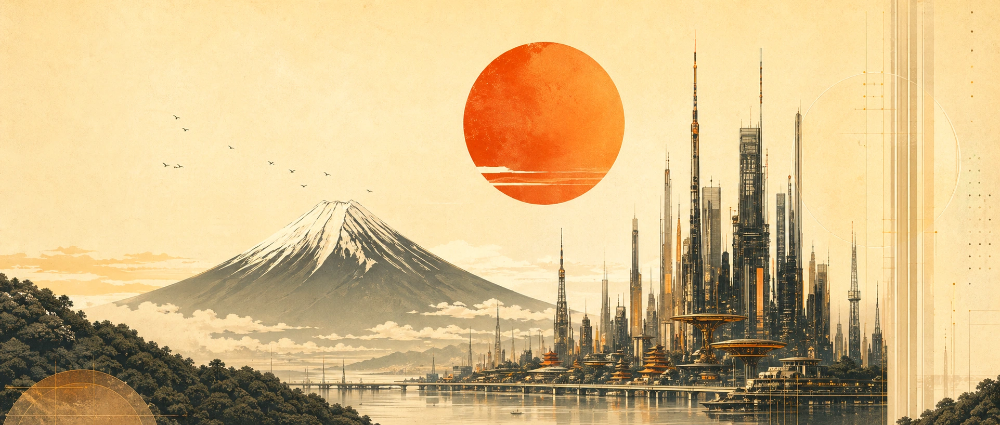

NEO MIRAI AI DESIGN CONFERENCE
Tokyo 2042
Illustration, interfaces, machines, optimism

Agenda
Three days of ideas and inspiration
-
New Frontiers
Keynotes, visions, and emerging paradigms.
-
Design x Intelligence
Crafting experiences with AI.
-
Society & Imagination
Systems, ethics, and collective futures.


Harmonic Flux
Immersive environment

Dream Compiler
Generative sculpture

Echoes of Tomorrow
AI soundscape

Tickets